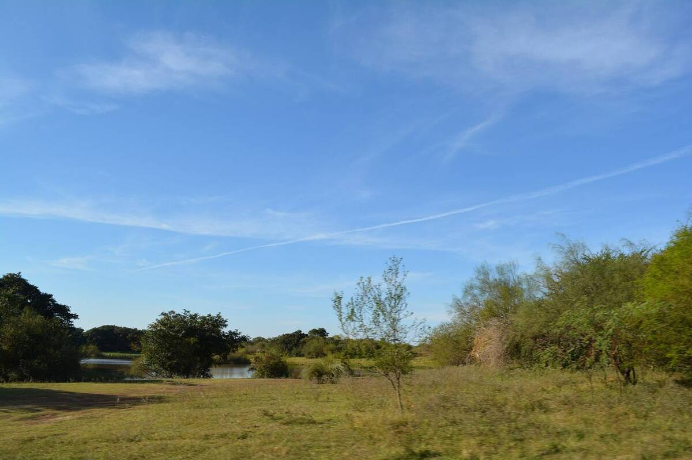
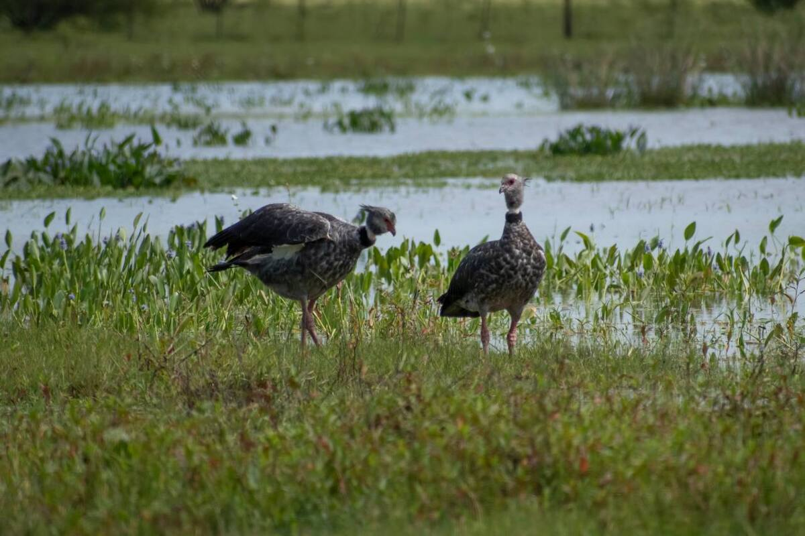
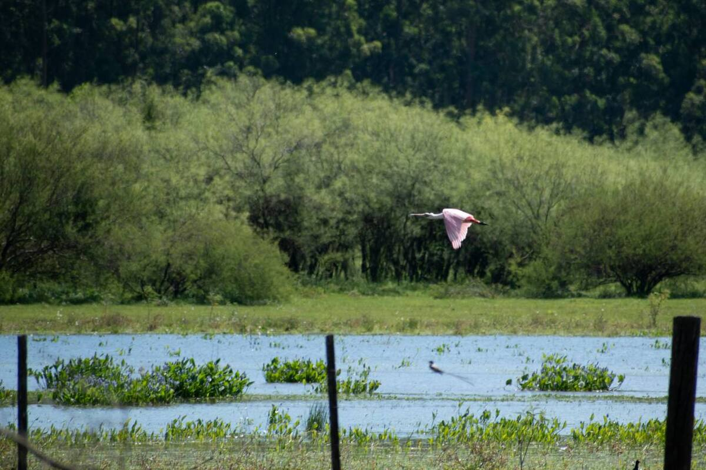
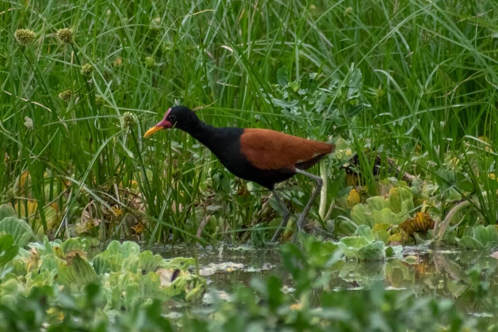
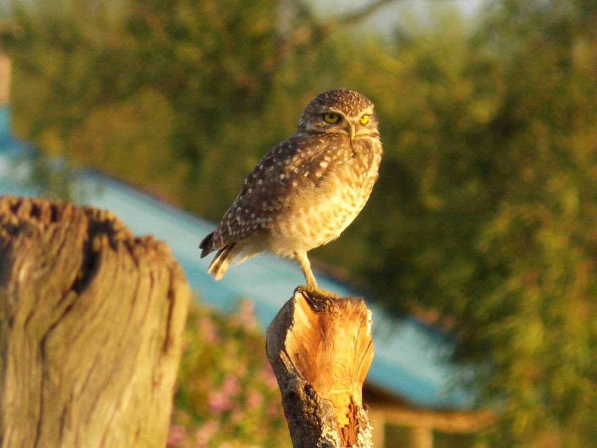
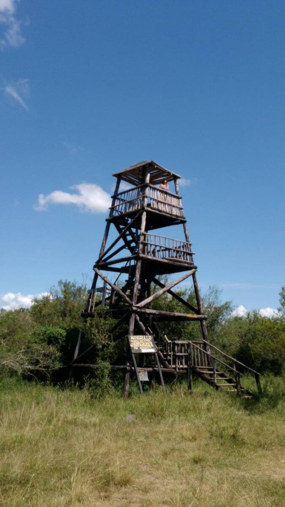
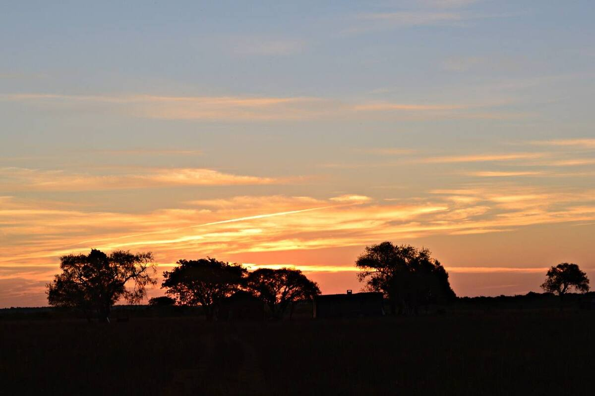

Donde se juntan dos ríos
Rincón de Franquía ocupa el rincón que forman el río Cuareim y el río Uruguay, al norte de Bella Unión. Por su ubicación recibe especies tropicales y subtropicales que llegan siguiendo los ríos, algo poco común en el resto del país.
En abril de 2013 ingresó al Sistema Nacional de Áreas Protegidas (Decreto 121/013) como «área de manejo de hábitats y/o especies».
Lo que vive acá
- 223 especies de aves, cerca de la mitad de las registradas en Uruguay. Es un Área de Importancia para la Conservación de las Aves (IBA).
- 21 especies de anfibios y 14 de reptiles. Tres figuran en la lista roja de la UICN, entre ellas la rana boyadora chica.
- Murciélagos con muy pocos registros en el país, como el murciélago de orejas anchas patagónico.
Una conquista de los vecinos
Todo empezó en 2004, cuando un grupo de vecinos de Bella Unión propuso proteger la zona. En 2011 el Municipio la declaró reserva y dos años después entró al SNAP. La ONG local GruPAmA fue la primera organización de la sociedad civil en co-gestionar un área del sistema.
Videos

Fotos

Foto: Siliaia3 · CC BY-SA 3.0

Foto: SebasFN · CC BY-SA 4.0

Foto: SebasFN · CC BY-SA 4.0

Foto: SebasFN · CC BY-SA 4.0

Foto: Giannina Pradella · CC BY-SA 3.0

Foto: Gmmv1980 · CC BY-SA 3.0

Foto: Siliaia3 · CC BY-SA 3.0